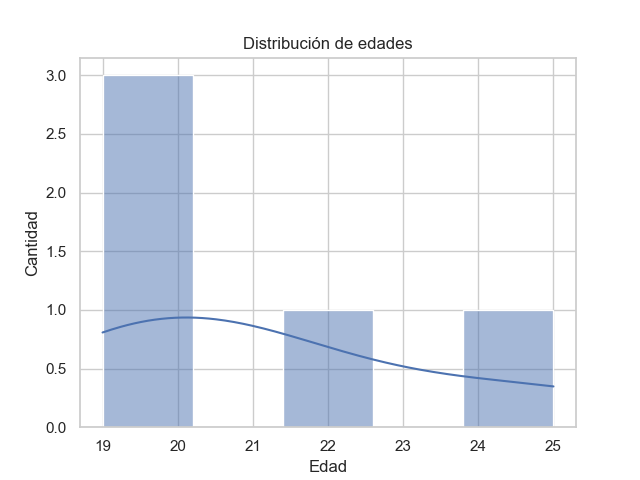

Gráfico-distribución de edad
Obtenemos un gráfico con la distribución de edad de los estudiante, datos almacenados en un archivo .Json .
import pandas as pd
import matplotlib.pyplot as plt
import seaborn as sns
from pathlib import Path
sns.set_theme(style="whitegrid")
df = pd.read_json("estudiantes.json")
plt.figure()
sns.histplot(df["edad"], bins=5, kde=True)
plt.title("Distribución de edades")
plt.xlabel("Edad")
plt.ylabel("Cantidad")
plt.show()
